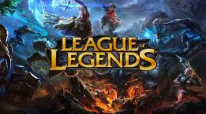
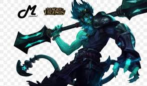

League of Legends

My Favorite Champion: Wukong

In League of Legends, I mainly play Wukong Jungle and Wukong Top.
Wukong is fun to play because of his strong engage, tricky clone ability, and his ultimate,
which can turn around team fights.
Why I Like Wukong
- Great engage tool with his ultimate (Cyclone).
- Can trick enemies with Decoy.
- Strong duelist in 1v1 fights.
- Very useful in both solo queue and team play.
Random Fun Facts
- Sometimes I go for early ganks when playing jungle.
- Top lane Wukong feels tanky and still does good damage.
- Building items like Black Cleaver and Divine Sunderer make him strong.
- I once carried a game with a 20/2/10
Back to main page